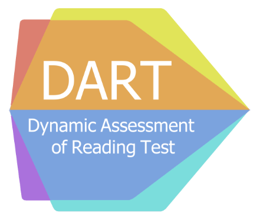

Projects
Dynamic Assessment of Reading Test (DART) Project
As Research Fellow

Traditional 'static' assessments can be used to screen for risk of reading difficulties, but depend heavily on prior learning experiences. Dynamic assessment, on the other hand, is a measure of latent capacity or learning potential, and is said to be less biased in culturally and linguistically diverse populations. The DART project is a 3-year longitudinal study funded by the Nuffield Foundation. Across three separate work packages (Reception, Year 3, Year 4), it assesses the ability of novel computerised dynamic assessments to predict growth in reading skills and to classify children at risk of reading difficulties.
Methods used: linear mixed effects modelling, logistic regression, ROC curve analysis, systematic review.
The Oral Language and Literacy (OLLI) Project
As PhD student
Although they consistently present with oral language weaknesses in English, children learning English as an additional language (EAL) are expected to catch up to their non-EAL peers through mainstream classroom instruction. The OLLI project consisted of two parallel studies: a longitudinal cohort study following the language and literacy development of EAL learners and their non-EAL peers, and a short-term explicit vocabulary intervention study delivered by speech and language therapy students. Over 18 months, EAL learners did not catch up to their non-EAL peers in vocabulary, but did show strengths in other domains. Vocabulary intervention appeared to be effective, with new word knowledge retained up to 6 months later.Methods used: linear mixed effects modelling, case study analysis